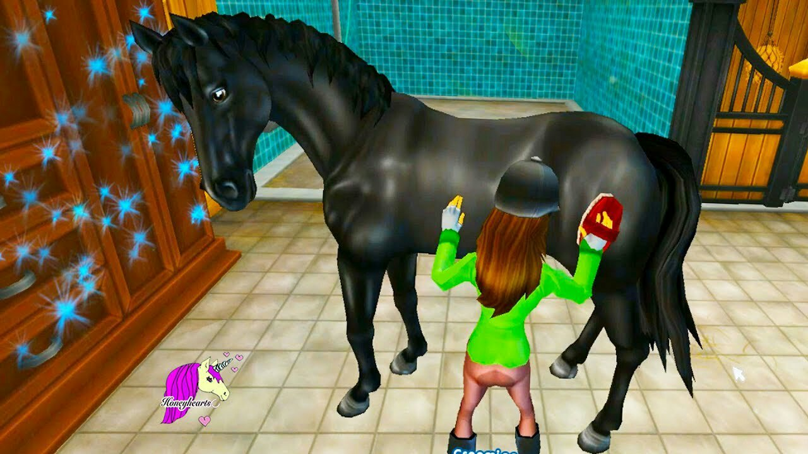

What is Star Stable?
Star Stable is an online game that is free-play or paid membership.
How to care for your horse?
Part of the game requires you care for the horse by feeding, grooming and cleaning daily.
How to stay competitive.
If a day is missed the strength level will drop and the horse will perform poorly and that is displayed on a color-coded “Happiness” bar. The inventory of supplies (character clothes, horse equipment and food) are kept in a backpack or storage closet. Supplies are purchased using Star Coins or shillings that are earned by winning races and doing quests.

How to level up and earn game shillings.
Horse races are timed and involve obstacle courses going through woods, villages, mountains and across rivers. Races are grouped by horse and character level resulting in more competitive events as contestants are of similar abilities. The higher place finishing the race results in more Star Coins or shillings earned.

Quests and outfitting your horse to perform better.
Quests vary greatly in difficulty levels with the more difficult ones taking longer to complete and earning more shillings. Some quests can be locating hidden items, doing chores or figuring out complex scenarios. Some quests require a few minutes and others can take weeks.
The more quests completed, more become available resulting in access to better horse equipment and character clothing and accessories.
When outfitting and equipping your horse, those items are purchased using Star Coins or shillings earned by completing races, chores and quests. The higher the item price, the better performing your character and horse will be. Items for the horse range from saddles, to reins, blankets and stockings. Even makeup and hairstyles are available for your character.